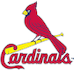

|
I've spent my entire career designing / developing mainframe systems using COBOL, CICS, and other mainframe related tools. I challenged myself to learn more modern technologies and become proficient in building systems on other platforms with an emphasis on the Cloud. This website is the first major step I am taking in that direction.
I built this site on the AWS platform using Python and the Python Flask framework, and uses API's I wrote to retrieve player statistics from the MLB Gameday data server. JSON dictionaries on the MLB server are updated within roughly 25 seconds of a completed play so the information is about as real-time as it gets. The Watch List feature can be used to text you when your favorite player does something fabulous! |
|
| I joined the Chicago Python User Group in March and this website is the product of my work in their spring mentorship program. Learning Python was the key focus however I have learned varying degrees of best practices and other tools such as AWS, API's, GitHub, Ubuntu, and much more! #ThankYouChiPy! | |
|
To make the program work everyone is assigned a mentor who guides the mentee through a path of learning new Pythonic skills, and then assists through the project phase where we build something to demonstrate what we've learned. My mentor Allan has been simply awesome, pointing me in the right direction and ensuring I am learning not only how to do things in certain ways, but also why which is equally as important.
Allan (a die hard Cardinals fan btw) and I have had many discussions or even debates on why this way and not that, best practices, or other interesting things I found through my own research. In the end I have learned a great deal and am one step closer to taking on the world. Thank you so much Allan, I see a Cubs vs Cardinals game in our future! |
 |